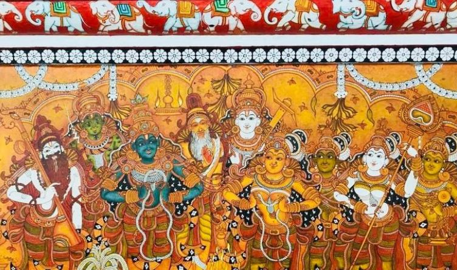

ART AND CRAFT PAGE

art and craft topic description:
Welcome to ART AND CRAFT page
| ART AND CRAFT PAGE | |
|---|---|
|  | |
| art and craft topic description: |
The murals are mythological theme based. The faculty explained how organic colors are derived, mixed to get different shades and witnessed students sketching and drawing in preparation for the creation of murals. Feel that the art form needs to be encouraged,supplanted & adopted rigorously by the society to flourish. |